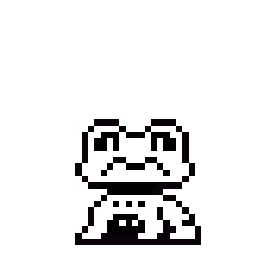
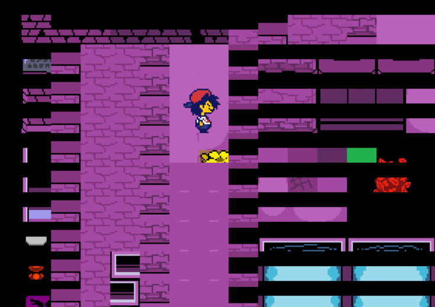
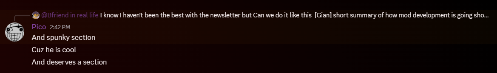
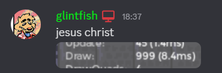
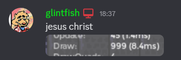
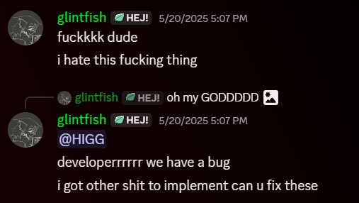
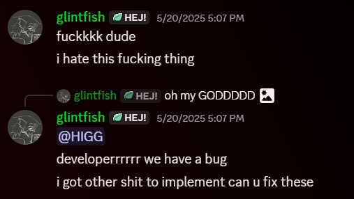
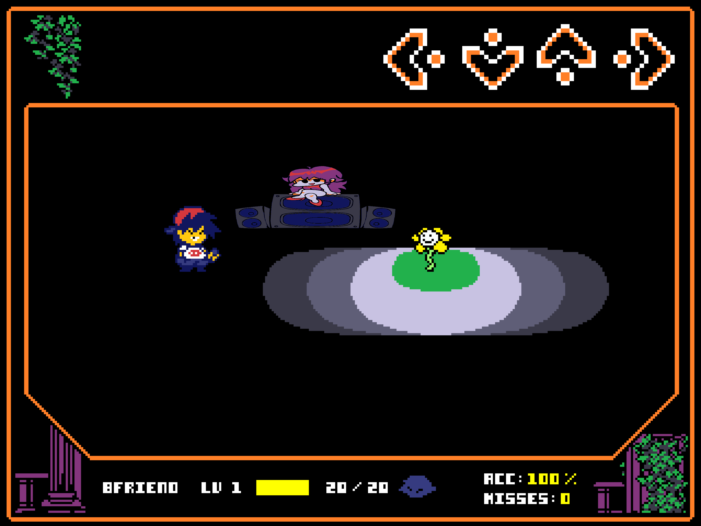

Happy Summer!
Written by one of the lead composers, ZachDK
Hey all! I hope you're having a good summer. We have a lot of good stuff prepared for you today!
This is our first newsletter, and my first time programming a website really, so I hope you enjoy this fun little site.
In terms of development, UNDERTALE: Funk-Mode is going well! Aside from minor complications when it comes to people's personal lives interfering with work, we haven't let anything get in the way of creating the best mod possible.
We hope you enjoy the final product, but even more so, we're thankful for your patience and the care and respect you've shown us. We will eternally be grateful for you all, and we can't wait for you to get a chance to play this mod.
With that said, enjoy the rest of the newsletter! I'll see you in the next section.

The State of the OST
Written by one of the lead composers, ZachDK
Well, here it is! The OST discussion.
Music is one of the most important parts of a Friday Night Funkin' mod. Shocker, I know. But I'm glad to say that Undertale: Funk-Mode is in good hands.
The team has four lead composers. Me, GontheGhost, Spunky Tunky, and Soba Noodles. We, alongside many of the other composers, have been working very hard to contribute to this mod and make it's OST the best it can be.
I'm very proud of our work, and we can't wait to get all of this out to you. Undertale: Funk-Mode has really been a wonderful experience to work on. I've learned and improved with each passing day, working on this mod. I hope you guys learn and improve as well, in your own personal projects.
It's thanks to you all that we can even make this mod!
Here are some of the songs we've been given permission to show you.
SONG TEASER 1
???
By ZachDK, SobaNoodles, & GontheGhost
SONG TEASER 2
Snowdin Town Snippet
By ZachDK
SONG TEASER 3
Laughable Humor Snippet
By Spunky Tunky
SONG TEASER 4
Ghostly Encounter v2 Snippet
By GontheGhost ft. ZachDK
SONG TEASER 5
Froggit Teaser
ZachDK ft. glintfish
And with that, I think that concludes the OST discussion for now. We're grateful for all of the kindness you've shown us, and for your continued dedication to the mod. We're trying our best to make the best music for you guys. We hope you love the OST once it's all out there!
Coding Struggles pt. 1
Written by the Lead Programmer, Glintfish
Hello, im glintfish, lead programmer for Undertale: Funk Mode!
Damn, this mod has been in the works for an entire year now. Its kinda crazy to think about! Ive been in this community for around 4 years now, and to think about how Funk Mode has been here for a fourth of it is... idk! Weird i guess? But a good kind of weird. Time flies by fast!
I know you didnt come here to read about my life story so ill cut it short and move onto the coding for the mod.
Lets not beat around the bush, coding is the main thing keeping this mod from coming out. Who would've guessed that coding is really hard!
Generally the thing thats been the biggest issue is planning ahead. We as the coders wanna make the mod as easy as possible to develop for, so that future updates can come out faster, but that also means a lot of planning, a lot of rewrites and refactors, and a LOT of code... Although, not really.
Im not going to lie, im an optimization nut. I love optimizing and squeezing as much performance as i can out of literally anything, and im especially doing it now because i want EVERYONE to be able to experience Funk Mode without any issues.
As of writing (3. May 2025.), the mod has ~3200 lines of code. compared to Psych 0.7.3's ~31000 or our old engines ~10000, and you can see the difference! I didn't want useless code and random stuff cluttering the codebase, so we ended up switching engines to one I was in the process of working on, which turned out to be a huge success!
Everything is insanely modular, easy to work with and understand, and also DOCUMENTED, unlike literally every other FNF mod / engine out there. I dont wanna sound like im bragging, but im just insanely happy with the way everything was done for this mod.
Now back to the actual progress. Again, as of writing, I just finished the mods new overworld implementation, and it works like a charm. Honestly, we don't really have that much stuff left to finish! Unfortunately, I am usually the one pulling most of the weight as our other coders are fairly busy, but I don't mind that- I like working on Funk Mode!
This is what it looked like before I fixed it LMAO

I am thinking about open sourcing Funk Mode once it releases, but at the same time, I don't want people blatantly stealing all my hard work, which is what the community usually does. I dunno, we'll see when the time comes!
That's it for now, thanks for reading!
* The dummy needs time to concentrate . . .

Coding Struggles pt. 2 (Newsletter Edition)
Written by the Coder of this Newsletter, ZachDK
Hello again! Yep, that's right, it's me!
Turns out one of the lead composers is actually the coder for the newsletter. Yep, that's right.
This newsletter has taken a lot of effort for me to get done. Initially, this was meant to be a Spring 2025 Newsletter. As you can tell, it ended up being a Summer themed newsletter instead.
I've tried to make it as readable and user-friendly as possible. Even though things have been tough, I can only pray that my efforts weren't in vain.
UNDERTALE: Funk-Mode is honestly the first mod I've ever worked on, and it has been a BLAST lemme tell ya. The dev team is so kind, and Gian and Danon have bene AMAZING directors. I honestly feel at home here--which is good for a mod of this scale.
There isn't really much else for me to say, to be honest. I suppose I could share some screenshots Glintfish shared with me on the progress of coding the mod.

uhhh...how did that get in here?
DAMN IT SPUNKY!
uh
anyways
 


 

But that's it for coding struggles! I don't really have much else to say other than getting that video to work was a pain.
Have a great day, everyone!
* You feel a totally random urge to pay robux for funk mode skins...in robox...

* pico is here too, by the way. this is your consicence speaking, you should pay robux for them. lol
Playable Characters?
Written by Mod Director Gian

Pico is officially confirmed for the mod. With luck he will appear in this demo. We already have a good couple of ideas for him, with some things in the works. Pico's story will be centered around the events of Undertale Yellow. He will encounter characters like Dalv, Martlet, Starlo, etc. etc.
On the topic of playable characters from the FNF universe, we still don't have anything for anyone else. We know that there are people who want to see Nene or even Senpai, but there are currently no plans for them. Our priority is for the main gameplay of Funk-Mode first, and playable characters second.
Even so, if we find a couple ideas and ways to include them, you can trust that Pico won't be the only character featured in the mod!
Collect my Trailers
Written by ZachDK
UNDERTALE: Funk-Mode has had quite a lot of trailers, and we're very happy to show them to you.
These should help give you a good idea of the mod, from the art style to the gameplay.
Don't forget to support the Ramware Broadcast, along with Soundwave Transmission. These trailers couldn't have been made without them.
Gameplay Teasers & Unused Content
Written by ZachDK

This section will focus primarily on gameplay teasers for those of you who want to see how the gameplay looks.
We've been hard at work on the mod, and while the overworld is our primary focus currently, don't think we've forgotten about the songs!
Early mockup for Flowey & Unused Versions of Your Best Guide
Unused because it doesn't fit the vibe of Your Best Friend. A little too...somber?
Unused because I think it's dookie.
Unused simply because a better version of this song exists. This was the first finished version of Your Best Guide that I made.
GIF of a frog dancing and unused versions of Croak

Old version of Croak, but mostly just a test to see if I could make it and make it work. Not really my best work, it's pretty much just a cover of Enemy Approaching without the melody.
Basically just two drafts of Croak v1.
Unused attempt at Croak v3.
yes
And that's it for unused content and gameplay teasers!